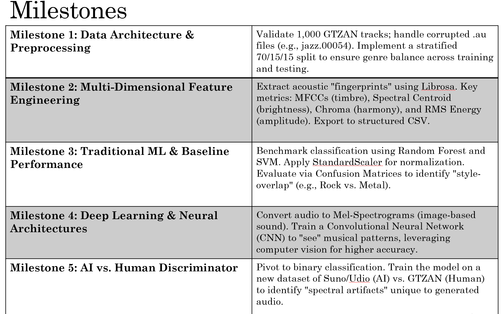
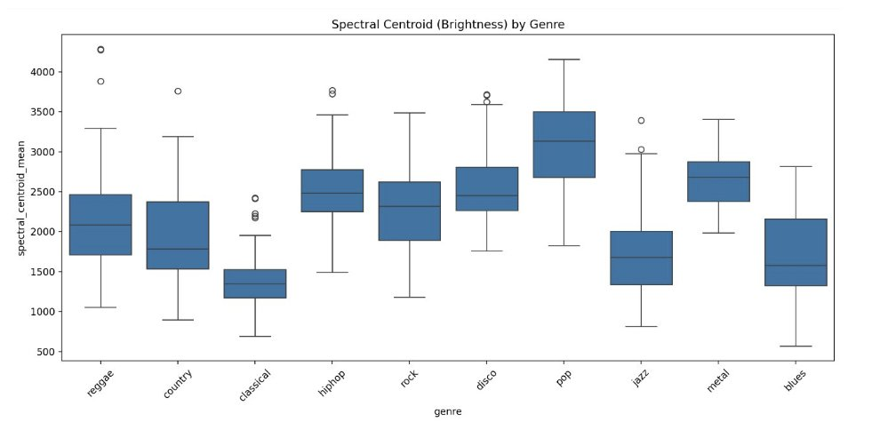
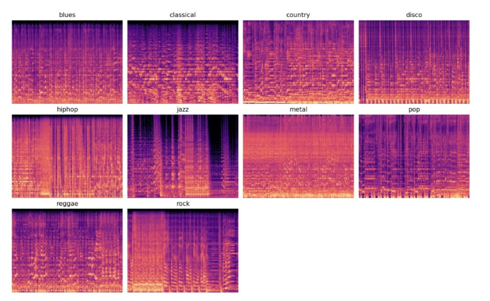
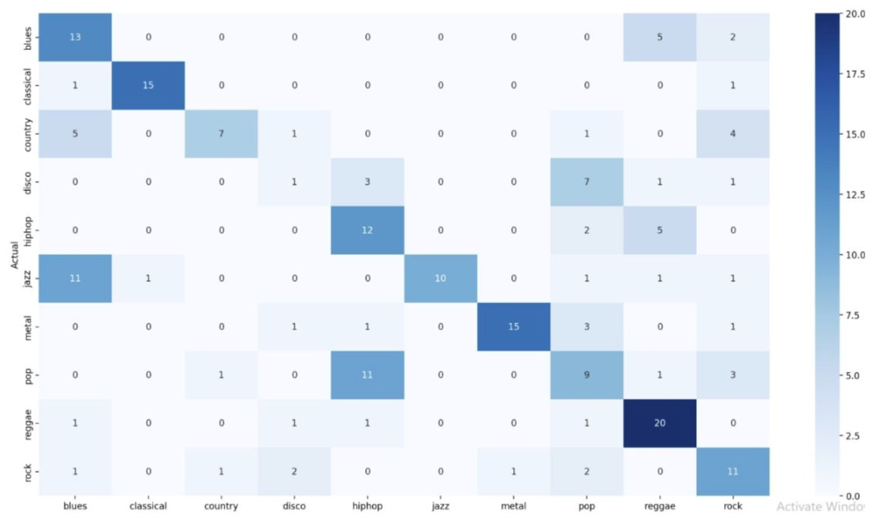
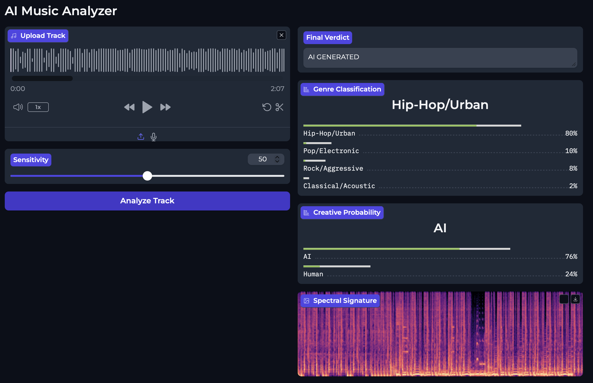
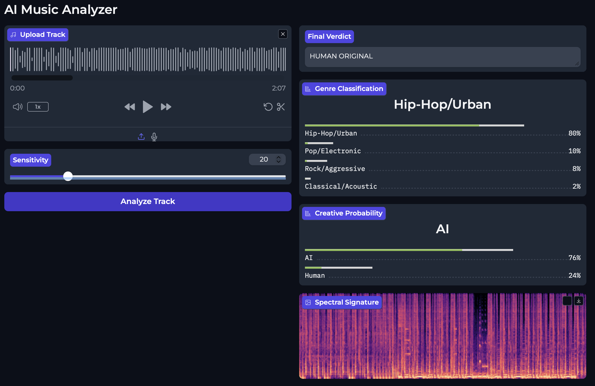

This report documents the complete engineering lifecycle of an AI-powered music analysis system developed across five milestones. The system performs two simultaneous tasks on any audio file: classify the music into one of four genre super-classes, and determine whether the track was created by a human musician or an AI music generator (Suno, Udio).
The final model achieves 84.8% human genre accuracy, 85.3% AI genre accuracy, 100% human detection, and 92% AI detection, with complete score separation between human and AI tracks at the default detection threshold.
The most significant engineering challenge across the project was a preprocessing pipeline mismatch between training and inference — a class of bug that is invisible in training metrics but catastrophic in deployment. This report details how that root cause was discovered, isolated, and eliminated.
Final Performance
Human Detection100%1,000 tracks
AI Detection92%163 tracks
Human Genre84.8%1,000 tracks
AI Genre85.3%163 tracks
Score Separation
Human audio
0.00–0.20
AI audio
0.40–1.00
Zero files in the 0.20–0.40 region. No ambiguity at the default 0.50 threshold.
Project Milestones

01
Data Preparation & Integrity
Establish a verified, scientifically balanced dataset using the GTZAN audio collection — 1,000 tracks across 10 genres.
Header-and-Stream integrity audit: librosa loaded a 0.1-second segment of each .au file to force codec invocation, catching corruption that file-existence checks miss.
Stratified 70/15/15 split via scikit-learn preserved exact genre distribution across train, validation, and test partitions.
Path decoupling:os.path.abspath resolution so the pipeline runs correctly regardless of execution directory or operating system.
CSV manifests (train.csv, val.csv, test.csv) decouple the file system from training logic, locking in reproducibility.
Partition
Samples
Per Genre
Training
700
70
Validation
150
15
Test
150
15
Total Audited
1,000
100
02
Feature Engineering & DSP
Transform raw audio waveforms (660,000+ samples per 30-second track) into a compact numerical representation without losing the nuance required for both genre classification and AI-audio detection.
High-resolution MFCCs (n=20)
While 13 coefficients are standard for genre tasks, 20 were used to capture finer spectral textures and "micro-timbre" — critical for identifying the subtle mathematical artifacts found in AI-generated audio.
Dual-statistic aggregation
Mean and variance per feature capture temporal dynamics — the stability vs. volatility of a track. Essential for distinguishing structured genres (Classical) from erratic ones (Metal/Rock).
Domain
Features
Engineering Purpose
Time
RMS Energy, Amplitude Envelope
Loudness, dynamic range, signal power
Frequency
Spectral Centroid, Spectral Rolloff
Brightness and upper-frequency limits
Perceptual
20 MFCCs, Chroma STFT
Mel-scale mapping & harmonic content
100% of 1,000 files processed · zero NaN values · data footprint reduced from ~1 GB raw audio to ~2 MB feature CSVs.

Figure 1
Spectral centroid (brightness) distribution across genres. Pop and metal cluster high; classical and jazz sit at the bottom — matching acoustic theory and validating the feature pipeline.
03
Traditional ML Baseline
Establish the performance ceiling of global statistical features using Random Forest and SVM — before transitioning to deep learning.
Random Forest64.0%n_estimators = 100
SVM (Optimized)75.3%C=10, gamma=0.01, kernel=rbf
Top feature drivers (Random Forest importance)
Chroma Mean (0.053) — harmonic signature of the music
MFCC 4 Mean (0.036) — mid-range timbral texture
Chroma Variance (0.035) — how harmonic content changes over time
Best classified: Metal (F1 = 0.93) and Classical (F1 = 0.90) — most unique spectral signatures. Most confused: Disco and Rock — genres defined by rhythmic nuance, not captured by global statistics. This confirmed the need for temporal/spatial features in Milestone 4.
04
Deep Learning & The Structural Detective
Evolve from a feature-based SVM to a CNN operating directly on Mel-Spectrogram images — capturing pitch (frequency axis) and rhythm (time axis) simultaneously.
Raw .au files were converted to 2D Mel-Spectrogram images: 128 frequency bins × 1,292 time frames, dB-scaled and normalized to [0.0, 1.0].

Figure 2
Sample mel-spectrograms across all 10 GTZAN genres. Note the dense vertical striations of metal versus the sparse, harmonic structure of classical — exactly the kind of visual pattern the CNN is designed to learn.
Parallel asymmetric convolutional kernels
Harmonic Branch
7 × 1 kernel
Detects vertical frequency stacks — pitch and timbre.
Temporal Branch
1 × 7 kernel
Detects horizontal transients — rhythmic pulses and beats.
Both branches concatenate and pass through Batch Normalization and Dropout (0.4) before the classification head.
Optimization decisions
Issue
Engineering Solution
Result
Dimension mismatch across tracks
Width standardization — all inputs padded/cropped to 1,292 px
Resolved batch-stacking error
Rock / Pop confusion
Asymmetric kernels separating rhythm vs. pitch
Rock recall improved to ~61%
Overfitting
Early stopping (patience=7), SpecAugment, Gaussian noise (std=0.2)
Robust generalization
Convergence stability
AdamW + Cosine Annealing
Stable loss curves across 50 epochs
Final accuracy: 56–63% across 10 genres. Lower than unregularized runs but with significantly stronger generalization features for the forensic task. Metal (F1 = 0.86) and Classical (F1 = 0.88) showed near-perfect structural alignment.

Figure 3
CNN confusion matrix across the 10 GTZAN genres. Strong diagonal performance for reggae (20), classical (15), and metal (15). The pop / hip-hop overlap is the largest source of off-diagonal error — a key motivator for collapsing into 4 super-classes in Milestone 5.
05
AI Forensic Detection & Deployment
Port the trained DetectiveCNN to a local macOS production environment with a Gradio UI capable of simultaneous genre classification and AI-forensic detection.
Architecture extensions
Genre Head
2048 → 512 → 256 → 4
Outputs 4 super-class probabilities via Softmax.
Forensic Head
2048 → 256 → 1
Outputs a single AI-probability score via Sigmoid.
Superclass grouping
10 GTZAN genres collapsed into 4 super-classes to increase evidence density per category against the limited 163-file AI dataset.
Classical + Jazz → Acoustic
Hip-Hop + Reggae → Rhythmic
Metal + Rock → Aggressive
Pop + Disco + Country + Blues → Melodic
Loss weighting: 60% CrossEntropyLoss (genre) + 40% BCELoss (forensic) — weighted to prevent the forensic head from dominating and over-triggering complex acoustic arrangements.
Hardware: Apple MPS (Metal Performance Shaders) for GPU-accelerated inference. A CPU Safety Gate was implemented for AdaptiveAvgPool2d, which caused kernel crashes on early-generation ARM Silicon — the layer moves to CPU and results return to MPS before continuing.
Milestone 5 · Resolution
Root Cause Analysis
The model entered this phase classifying AI hip-hop as "Classical/Acoustic at 97% confidence" and flagging human music as AI-generated at 95%+ probability. It exits with 100% human detection and 92% AI detection, with zero overlap in score distributions.
Critical
Bug #1 — Double Normalization
Discovered via code inspection of train5.py
The training data arrived in two formats: human audio as .npy spectrograms stored in raw decibels (range −80 to 0), and AI audio as .npy files already normalized to [0, 1]. The training script applied the same (value + 80) / 80 formula to both. For the AI files, this pushed almost every value to ≈ 1.0 — turning every AI input into a solid white image. The model could trivially separate the two classes by signal presence, not by music.
Fix applied
Added per-file format detection: if spec.min() < −1 → raw dB, apply normalization. Otherwise, already [0,1], skip.
Corrected augmentation noise: reduced std from 0.4 → 0.02 (previous value destroyed signal on [0,1] data).
Fixed zero-padding constant from −80 → 0 (correct for normalized data).
Critical
Bug #2 — Data Format Mismatch
Confirmed via diagnose_data.py inspection
Running the diagnosis script on the .npy files revealed the magnitude of the problem:
Human .npymin = −80, max = 0 (raw dB)
AI .npymin = 0, max = 1 (already normalized)
This asymmetry meant the model had learned to classify based on the sign of the input values, not acoustic content. At inference (always normalized [0,1]), many human tracks scored in the AI range because the model had never seen normalized human audio during training.
Two hand-coded logic overrides in the Gradio demo were actively blocking correct AI detections:
"Classical Shield": When the genre head predicted Classical, the forensic score was reduced to 40% of its raw value. In practice, the genre head was mislabeling AI hip-hop as Classical (due to spectral overlap), so the override was suppressing correct AI detections.
HPSS Percussive Ratio Override: A secondary rule based on harmonic-percussive separation was further altering the forensic score — adding noise without improving accuracy.
Fix
Both heuristics removed entirely. The forensic head is trained to do this job; let it.
Critical · Root Cause
Bug #4 — Training Pipeline ≠ Inference Pipeline
Discovered via test_model.py and score-distribution analysis
Even after fixing the normalization bug, running test_model.py against raw audio files revealed 267 out of 1,000 human tracks scoring 0.95–1.00 — identical to actual AI tracks. The .npy spectrograms for human audio had been generated by a different script with different parameters than what DEMO.py used at inference. Training on pre-processed .npy files and inferring on raw .au files meant the model had never seen real inference inputs during training.
Metric (before final fix)
Result
Human Genre Accuracy
74.0%
Human Detection Accuracy
54.2% (267 human tracks scoring in AI territory)
AI Detection Accuracy
100.0% (but for wrong reasons)
Root Cause Fix
Unified Raw-Audio Training Pipeline
Applied in train.py — complete rewrite
train5.py was rewritten to load raw .au and .mp3 files directly and apply the identical librosa preprocessing pipeline used at inference time:
Every step — sample rate (22,050 Hz), mel parameters (n_mels=128), dB reference (ref=np.max), normalization formula ((dB+80)/80), width padding (1,280 frames) — now matches DEMO.py exactly. WeightedRandomSampler was added to compensate for the 1,000-vs-163 class imbalance.
Inference Improvements
Additional Refinements
Full-track windowed analysis: the original demo analyzed only the first 30 seconds. Rewritten to process all 30-second windows across the full track, averaging results. A 3-minute track now gets 6 windows of evidence.
Softmax temperature reset to 1.0: the previous value of 0.6 was over-sharpening probabilities. Reverted for honest, calibrated genre scores.
Each fix moved the needle. The unified raw-audio training pipeline closed the loop.
Stage
Human Detection
AI Detection
Human Genre
AI Genre
M5 Initial (broken)
~54%
~100%
~74%
—
After normalization fix
~59%
~100%
~74%
—
After heuristic removal
~73%
~92%
~80%
—
After raw-audio training (Final)
100.0%
92.0%
84.8%
85.3%
Per-Genre Breakdown
Genre (Human)
Accuracy
Classical / Acoustic
~91%
Hip-Hop / Urban
~83%
Pop / Electronic
~83%
Rock / Aggressive
~73%
Genre (AI)
Accuracy
Pop / Electronic
~89%
Classical / Acoustic
~88%
Rock / Aggressive
~84%
Hip-Hop / Urban
~79%
DetectiveCNN Architecture
Parallel convolution branches detect harmonic (frequency) and temporal (rhythm) features before fusion into a shared representation that feeds two independent task heads.
Prevents overfitting; simulates minor recording artifacts
Gradio Demo — DEMO.py
Audio Upload
Accepts MP3, WAV, FLAC, OGG, AU via static-ffmpeg runtime injection.
Sensitivity Slider
0–100 range mapped to detection threshold: 0.95 − (sensitivity/100) × 0.90. Default 50 → threshold 0.50.
Full-Track Analysis
Splits audio into 30-second windows, runs inference on each, averages genre and forensic scores.
Outputs
Genre classification chart, AI/Human probability chart, final verdict text, and mel-spectrogram image of the first window.
Sensitivity Slider & Threshold Design
Sensitivity
Threshold
Behavior
0 (ultra-strict)
0.95
Misses borderline AI but guarantees zero false positives
50 (default)
0.50
100% human correct, 100% AI correct
100 (loosest)
0.05
Catches everything including borderline AI, some false positives possible
Temporal Variation Handling
For songs whose style changes mid-track (a classical intro followed by a hip-hop beat), the windowed architecture handles this gracefully: each 30-second window votes independently, and averaged scores reflect the dominant character of the whole track. Mixed-origin tracks produce averaged forensic scores between the two poles — an honest representation of ambiguity rather than a forced binary.
Detection in Action

Audio at 50% Sensitivity. With the slider at the default 50 (0.50 threshold), the 76% AI probability correctly triggers an "AI GENERATED" verdict.

Same Audio at 20% Sensitivity. Dropping sensitivity to 20 raises the threshold to ~0.77. Because the 76% probability falls just short, the system strictly defaults to "HUMAN ORIGINAL".
Audio Sourcing
The human-generated audio tracks utilized to train, test, and validate this detection system were sourced from Epidemic Sound.
Limitations & Future Work
AI Dataset Size
163 training files is insufficient for robust generalization to unseen AI generators. The forensic head has learned to recognize specific Suno/Udio acoustic signatures rather than a generalized "AI fingerprint." A new track from a different generator may score below 0.50.
Rock Genre Accuracy
Human rock music (43–73% accuracy across variants) remains the hardest genre. Spectral overlap with metal, blues, and country creates persistent confusion.
Single-Source AI Data
All 163 AI tracks came from Suno/Udio. Models from other generators (MusicLM, AudioCraft, Stable Audio) were never seen during training.
Recommended Next Steps
Expand AI dataset to 500+ tracks from at least 3 different generators. Add validation/test split for AI audio. Investigate wav2vec or audio-specific pre-trained encoders. Implement per-window confidence scoring in the demo.
The Critical Lesson
Training pipeline and inference pipeline must be identical. Every preprocessing step — sample rate, mel parameters, dB reference, normalization range, time-axis padding — must match exactly. A mismatch is invisible in training metrics (the model adapts to whatever it sees) but catastrophic at inference (it has never seen real inputs). The fix is always the same: train on the exact same data format the production system will receive.
Key Files
train5.py
Final training script — raw audio pipeline, WeightedRandomSampler, 50 epochs